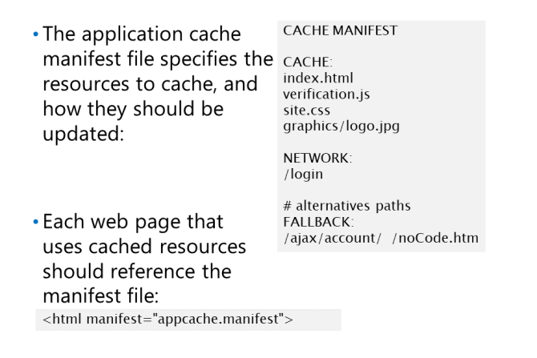
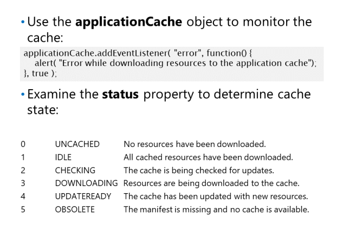
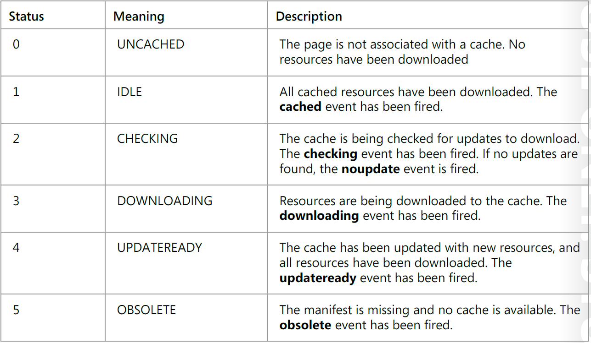

Konfigurowanie pamięci podręcznej aplikacji

Plik manifestu pamięci podręcznej określa dane, które przeglądarka internetowa powinna przechowywać w pamięci podręcznej aplikacji. To
plik to lista zasobów podzielona na osobne sekcje oznaczone jako CACHE, NETWORK i FALLBACK. The
informacje w tych sekcjach określają, w jaki sposób przeglądarka reaguje na żądanie dotyczące
zasób, gdy aplikacja internetowa działa w trybie online lub offline.
Aby dodać plik manifestu do aplikacji, utwórz nowy plik tekstowy i zapisz go w folderze głównym z końcówką .manifest
W tym pliku wypisz wszystkie zasoby statyczne, które powinny zostać pobrane i zapisane w pamięci podręcznej.
Plik może zawierać następujące sekcje:
CACHE: Zasoby wymienione w tej sekcji są pobierane raz, gdy strona jest początkowo ładowana
do przeglądarki użytkownika. Następnie buforowana wersja tych zasobów będzie używana i będą one aktualizowane z serwera
NETWORK: Zasoby wymienione w tej sekcji będą zawsze pobierane, jeśli sieć jest dostępna.
Nie są buforowane.
FALLBACK: Zasoby wymienione w tej sekcji nie są buforowane, ale podajesz alternatywny adres URL
jeśli serwer stanie się niedostępny. W pokazanym przykładzie wszystkie adresy URL poprzedzone znakiem
ajax / account / path zostaną zastąpione plikiem noCode.htm, jeśli nie można ich odzyskać. The
zasoby alternatywne, takie jak plik noCode.htm w przykładzie, są buforowane.
Określ nazwę pliku manifestu, który ma być używany na stronie internetowej, dodając manifest
atrybut elementu
html
<html manifest="appcache.manifest">
Monitorowanie pamięci podręcznej aplikacji

Pamięć podręczna aplikacji jest dostępna dla JavaScript
za pośrednictwem właściwości applicationCache
Obiekt pamięci podręcznej aplikacji
zwrócone przez tę właściwość wprowadza
kompleksowy model wydarzeń obejmujący cykl życia
i zachowanie pamięci podręcznej. Te wydarzenia obejmują
następujące:
checking : to zdarzenie jest uruchamiane, gdy przeglądarka sprawdza pamięć podręczną aplikacji pod kątem aktualizacji.
downloading :To zdarzenie jest uruchamiane, gdy przeglądarka rozpoczyna pobieranie zasobów do aplikacji
updateready: To zdarzenie jest uruchamiane, gdy pojawiła się nowa wersja buforowanych obiektów dla strony internetowej
obsolete: To zdarzenie jest uruchamiane, jeśli plik manifestu nie jest już dostępny, a pamięć podręczna aplikacji nie
dłużej obowiązuje dla bieżącej strony internetowej.
cached : To zdarzenie jest uruchamiane, gdy pamięć podręczna aplikacji jest gotowa i dostępna do użycia.
error: To zdarzenie jest uruchamiane, jeśli wystąpi błąd podczas pobierania zasobów do pamięci podręcznej lub podczas sprawdzania
zasoby do pobrania.
noupdate: To zdarzenie jest uruchamiane, jeśli nie znaleziono żadnych zmian po sprawdzeniu manifestu pod kątem aktualizacji.
progress: To zdarzenie jest uruchamiane, gdy każdy zasób określony w manifeście jest pobierany do aplikacji
Poniższy przykład pokazuje, jak złapać zdarzenie błędu pamięci podręcznej aplikacji:
Pamięć podręczna aplikacji implementuje także właściwość stanu numerycznego: status

Wywoływanie aktualizacji zasobów za pomocą manifestu
Aby wymusić aktualizację, aby uzyskać nową wersję
istniejący zasób, musisz zrobić znaczący
przejdź do pliku manifestu. Po prostu aktualizuję
data ostatniej modyfikacji nie wystarcza, aby uruchomić
całkowite odświeżenie w przeglądarce. Najlepsza droga do
wymuszenie aktualizacji polega na dodaniu pola komentarza do manifestu z numerem wersji, na przykład:
#version=1.2.3
Możesz także użyć funkcji update() obiektu applicationCache, aby zainicjować sprawdzanie dostępności aktualizacji Wszelkie istniejące zasoby buforowane będą używane do momentu ponownego załadowania strony lub wywołania funkcji swapCache() w applicationCache
W poniższym przykładzie kodu funkcja swapCache () jest wywoływana, jeśli pamięć podręczna została zaktualizowana o nową
zasoby (kod statusu 4 to UPDATEREADY). Ten kod zmusza stronę do korzystania z nowego
zasoby.
Testowanie łączności sieciowej
Poniższy przykład kodu pokazuje, jak wykryć stan sieci strony podczas ładowania. Obciążenie
moduł obsługi zdarzeń sprawdza właściwość onLine obiektu nawigatora i wyświetla status w
statusDiv div na stronie. Programy obsługi zdarzeń online i offline uruchamiają i aktualizują wyświetlany status, jeśli
łączność sieciowa się zmienia.